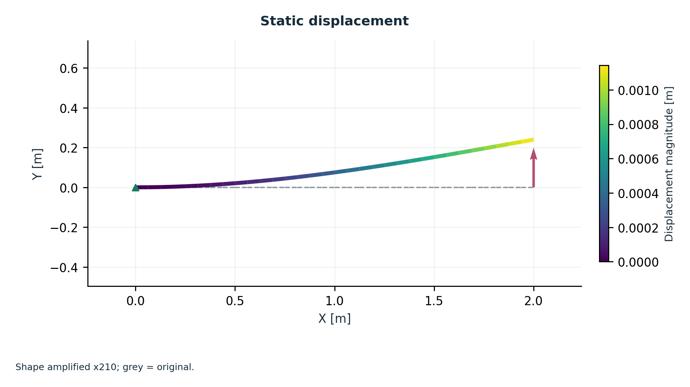

ACA01
SOL 101SOL 103
Slender cantilever: static bending and natural frequencies
Analytical verification
A clamped uniform beam tests exact static bending and the first four Euler-Bernoulli normal modes. Consistent translational mass and a single bending plane give an independently specified one-dimensional eigenproblem.
Recorded mesh and result field
Within the stated case criteria
All coarse-mesh comparisons remain in the recorded data.